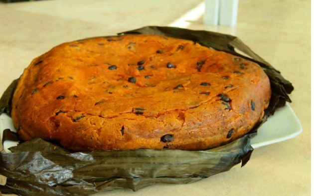

Receta de pib
Pagina de inicio

El pib es un platillo tradicional durante el hanal pixán (comida de las animas), es la ofrenda principal
en el altar que se prepara para los familiares fallecidos que en estos días obtienen el "permiso" para visitarnos.
En los poblados se prepara con una mezcla de carnes y menudencias, y se cocina bajo tierra con leña.
Ingredientes
- 2 kilos masa
- 1 litro manteca de cerdo
- 1 pechuga de pollo
- 1/2 kilo pierna de cerdo
- 1/2 kilo espelon (opcional)
- suficiente Cebolla
- 1 Pimiento o chile dulce
- 1 ramita epazote
- suficiente Achiote
- Hojas plátano limpias
- al gusto sal y pimienta
Pasos para su preparacion
- Calentamos la manteca y le agregamos una parte del achiote, una vez disuelta reservamos.
- En una olla ponemos a cocer el pollo junto al cerdo, agregamos achiote, la ramita de epazote, cebolla y tomate en trozo.
Sazonamos con sal y pimienta. Una vez cocido retiramos, deshebramos y reservamos.
- Tomamos la masa la revolvemos con la manteca que hervimos con el achiote. Condimentamos con sal.
- A medio kilo de masa le vamos ir agregando de poco en poco el caldo que nos quedó de cocer las carnes
hasta formar un caldo espeso al que llamamos kool. Reservar.
- En un refractario colocamos la base de hoja de plátano. Tomamos 1 kilo de la masa y formamos una cama
y las orillas como haciendo un pie, podemos añadir el espelon al gusto. Añadimos la carne deshebrada y el kool.
- Formamos en una hoja la tapa y cubrimos el pib. Cubrimos con más hoja de plátano y llevamos a hornear a 180 grados por aproximadamente 2 horas.
- Podemos acompañarlo con salsa de tomate y salsa de chile habanero.